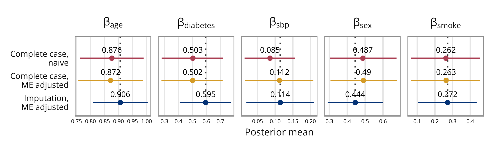

library(survival) # Survival modelling
library(INLA) # Modelling
library(tidyverse) # Data wrangling and visualisationMissing and mismeasured covariate
The data for this example is originally from the Third National Health and Nutrition Survey (NHANES III), but we use the data as pre-processed and provided by Bartlett and Keogh (2018). They linked the NHANES III data to data from the US National Death Index, with information about the mortality status of each participant in 2011. Following Keogh and Bartlett (2021), we consider a Weibull survival model with continuous covariates systolic blood pressure (SBP) and age, and binary covariates diabetes status, sex and smoking status. The response is time until death by cardiovascular disease. Deaths by other causes are treated as censorings.
Measurements of SBP are known to vary substantially within the same patient, and it is therefore measured twice for some participants, enabling us to estimate the variance of the error. However, for some participants there is only one measurement, and for others the SBP is completely missing. Note that the smoking status is also missing for around half of the participants, but since we only consider continuous ME, all observations with missingness in the (binary) smoking status are removed for this illustrative example, resulting in \(n = 3433\) observations.
To read more about how the Weibull hazard model is used in INLA in general, the documentation is very helpful.
Packages
inla.setOption(num.threads = "1:1")Function for looking at relevant posterior estimates:
view_relevant <- function(INLA_res, model_name){
fixed <- INLA_res$summary.fixed[c("mean", "0.025quant", "0.975quant")]
hyper <- INLA_res$summary.hyperpar[c("mean", "0.025quant", "0.975quant")]
relevant <- c("beta.age", "beta.diabetes", "beta.sex", "beta.smoke")
cat(model_name, "\n")
beta.x <- hyper[nrow(hyper), ]
rownames(beta.x) <- "beta.sbp"
rbind(beta.x, fixed[relevant, ])
}Setting up the data
We load the data, and take a look at the first observations.
full_data <- read.csv("data/bloodpressure.csv")
head(full_data) X sbp1 sbp2 sex age smoke diabetes d t
1 1 NA NA 0 -0.3 NA 0 0 20.833336
2 2 1.8 NA 0 1.2 NA 1 0 3.250000
3 3 0.5 NA 0 -0.4 NA 1 0 20.416664
4 4 NA NA 1 0.0 1 0 0 4.083336
5 5 0.5 NA 1 -0.7 1 0 0 12.000000
6 6 -0.1 NA 1 -1.0 1 0 0 21.166664As mentioned, we only consider measurement error and missing data in continuous covariates, so we remove the observations that have no recorded smoking status.
data <- full_data %>% drop_na(smoke)
head(data) X sbp1 sbp2 sex age smoke diabetes d t
1 4 NA NA 1 0.0 1 0 0 4.083336
2 5 0.5 NA 1 -0.7 1 0 0 12.000000
3 6 -0.1 NA 1 -1.0 1 0 0 21.166664
4 10 1.9 NA 1 2.0 0 0 0 3.250000
5 13 1.1 0.3 1 0.2 0 0 0 13.666664
6 14 NA NA 0 0.7 0 0 1 5.833336Complete case Bayesian analysis using INLA
As a baseline model to compare to the later models, we do a complete case analysis. For this naive analysis, only the observations that have a recorded sbp1 measurement are used.
ccdata <- data %>% drop_na(sbp1)
n <- nrow(ccdata)
head(ccdata) X sbp1 sbp2 sex age smoke diabetes d t
1 5 0.5 NA 1 -0.7 1 0 0 12.00000
2 6 -0.1 NA 1 -1.0 1 0 0 21.16666
3 10 1.9 NA 1 2.0 0 0 0 3.25000
4 13 1.1 0.3 1 0.2 0 0 0 13.66666
5 15 0.8 NA 1 1.4 0 0 0 2.75000
6 16 -0.6 NA 1 -0.1 0 0 0 2.50000# Note: JAGS and INLA use the same Weibull parameterization
# (provided "variant" = 0 in INLA)
formula.naive <- inla.surv(t/10, d) ~ sbp1 + sex + age + smoke + diabetes
model_naive <- inla(formula.naive,
family ="weibullsurv",
data = ccdata,
control.family = list(list(variant = 0)))
cat("Naive model")Naive modelmodel_naive$summary.fixed[c("mean", "0.025quant", "0.975quant")] mean 0.025quant 0.975quant
(Intercept) -2.3611508 -2.55027441 -2.1786506
sbp1 0.0852421 0.01318898 0.1560199
sex 0.4872863 0.30313969 0.6759058
age 0.8762591 0.76273395 0.9894474
smoke 0.2621554 0.06417933 0.4554144
diabetes 0.5032389 0.27969458 0.7178608Measurement error models in INLA
Next, we fit two measurement error models, first using only the complete cases for SBP1 (i.e, the same data set as for the previous complete case analysis), and next a measurement error model that uses all the SBP measurements, and thus both adjusts for the measurement error and the missingness.
Specifying priors (used in both ME models)
The priors are set up the same way as in Keogh and Bartlett (2018).
# Priors for measurement error variance and true x-value
prior.prec.u <- c(0.5, 0.5) # Gamma(0.5, 0.5) (same as Keogh&Bartlett)
prior.prec.x <- c(0.5, 0.5) # Gamma(0.5, 0.5) (same as K&B)
#prec.u = 1/sigma_uu
prec.u <- 2.8
prec.x = 1
#curve(dgamma(x, shape = 0.5, rate = 0.5))
# Priors for exposure model coefficients
prior.alpha <- c(0, 1/10000) # N(0, 10^4) (same as K&B)
# Priors for model of interest coefficients
prior.beta = c(0, 1/1000) # This has a Gaussian prior
# (K&B specify prior -beta/r ~ N(0,10^6). Since r has prior Exp(0.001),
# the expected value of r is 1000, and so if we fix this,
# we can use prior beta ~ N(0, 1000).)
# Prior for shape parameter of the Weibull survival model
prior.exp <- 0.01 # Gamma(1, 0.001) ~ Exp(0.001) (INLA sets prior on theta, r~Exp(0.1*theta))
exp.init <- 1.4ME model ignoring missing observations
First we fit a model to account for the measurement error, using only the complete cases for SBP1.
n <- nrow(ccdata)
# Specifying Y object
surv.time <- c(ccdata$t, rep(NA, 3*n))
event <- c(ccdata$d, rep(NA, 3*n))
Y.surv <- inla.surv(surv.time/10, event)
Y.expos.sbp <- c(rep(NA, n), rep(0, n), rep(NA, 2*n))
Y.err.sbp <- c(rep(NA, 2*n), ccdata$sbp1, ccdata$sbp2) # Use all available data
Y <- list(Y.surv, Y.expos.sbp, Y.err.sbp)
beta.0 <- c(rep(1, n), rep(NA, 3*n))
beta.sbp <- c(1:n, rep(NA, 3*n))
beta.sex <- c(ccdata$sex, rep(NA, 3*n))
beta.age <- c(ccdata$age, rep(NA, 3*n))
beta.smoke <- c(ccdata$smoke, rep(NA, 3*n))
beta.diabetes <- c(ccdata$diabetes, rep(NA, 3*n))
# Insert NAs in last model where w is NA
tt <- 1:n
tt[is.na(ccdata$sbp2)] <- NA
beta.sbp.copy <- c(rep(NA, n), 1:n, 1:n, tt)
weight.sbp <- c(rep(NA, n), rep(-1, n), rep(1, 2*n))
alpha.0 <- c(rep(NA, n), rep(1, n), rep(NA, 2*n))
alpha.sex <- c(rep(NA, n), ccdata$sex, rep(NA, 2*n))
alpha.age <- c(rep(NA, n), ccdata$age, rep(NA, 2*n))
alpha.smoke <- c(rep(NA, n), ccdata$smoke, rep(NA, 2*n))
alpha.diabetes <- c(rep(NA, n), ccdata$diabetes, rep(NA, 2*n))
Scale <- c(rep(1, 4*n) )
mat1 <- list(Y = Y,
beta.0 = beta.0,
beta.sbp = beta.sbp,
beta.sex = beta.sex,
beta.age = beta.age,
beta.smoke = beta.smoke,
beta.diabetes = beta.diabetes,
beta.sbp.copy = beta.sbp.copy,
weight.sbp = weight.sbp,
alpha.0 = alpha.0,
alpha.sex = alpha.sex,
alpha.age = alpha.age,
alpha.smoke = alpha.smoke,
alpha.diabetes = alpha.diabetes,
Scale = Scale)The formula is set up as described in Simulation example (except that there we also had a term for the Berkson ME, which we don’t have here).
# INLA formula with copy option
formula1 <- Y ~ beta.0 - 1 +
f(beta.sbp.copy, weight.sbp, model="iid", values = 1:n,
hyper = list(prec = list(initial = -15, fixed=TRUE))) +
f(beta.sbp, copy="beta.sbp.copy",
hyper = list(beta = list(param = prior.beta, fixed=FALSE))) +
beta.sex + beta.age + beta.smoke + beta.diabetes +
alpha.0 + alpha.sex + alpha.age + alpha.smoke + alpha.diabetesThe model is then fit.
model1 <- inla(formula1, data = mat1,
family = c("weibull.surv", "gaussian", "gaussian"),
control.family = list(
list(hyper = list(alpha = list(param = prior.exp,
initial = log(exp.init),
fixed = FALSE))),
list(hyper = list(prec = list(initial = log(prec.x),
param = prior.prec.x,
fixed = FALSE))),
list(hyper = list(prec = list(initial = log(prec.u),
param = prior.prec.u,
fixed = FALSE)))
),
control.predictor=list(link=3),
scale = Scale,
control.fixed = list(
mean = list(beta.0 = prior.beta[1],
beta.sex = prior.beta[1],
beta.age = prior.beta[1],
beta.smoke = prior.beta[1],
beta.diabetes = prior.beta[1],
alpha.0 = prior.alpha[1],
alpha.sex = prior.alpha[1],
alpha.age = prior.alpha[1],
alpha.smoke = prior.alpha[1],
alpha.diabetes = prior.alpha[1]),
prec = list(beta.0 = prior.beta[2],
beta.sex = prior.beta[2],
beta.age = prior.beta[2],
beta.smoke = prior.beta[2],
beta.diabetes = prior.beta[2],
alpha.0 = prior.alpha[2],
alpha.sex = prior.alpha[2],
alpha.age = prior.alpha[2],
alpha.smoke = prior.alpha[2],
alpha.diabetes = prior.alpha[2])))
view_relevant(model1, "Repeated measurement")Repeated measurement mean 0.025quant 0.975quant
beta.sbp 0.1121153 0.01386680 0.2082771
beta.age 0.8716486 0.75627658 0.9866010
beta.diabetes 0.5019704 0.27834125 0.7167173
beta.sex 0.4903540 0.30615108 0.6789968
beta.smoke 0.2631645 0.06519664 0.4564406ME model with missingness in SBP1 and SBP2
Our full measurement error model account for both the measurement error in the blood pressure measurement, as well as the missingness.
We begin by setting up the matrices that define the model structure. Note that we transform the survival time to avoid numerical issues.
n <- nrow(data)
# Specifying Y object
surv.time <- c(data$t, rep(NA, 3*n))
event <- c(data$d, rep(NA, 3*n))
Y.surv <- inla.surv(surv.time/10, event)
Y.expos.sbp <- c(rep(NA, n), rep(0, n), rep(NA, 2*n))
Y.err.sbp <- c(rep(NA, 2*n), data$sbp1, data$sbp2) # Use all available data
Y <- list(Y.surv, Y.expos.sbp, Y.err.sbp)
beta.0 <- c(rep(1, n), rep(NA, 3*n))
beta.sbp <- c(1:n, rep(NA, 3*n))
beta.sex <- c(data$sex, rep(NA, 3*n))
beta.age <- c(data$age, rep(NA, 3*n))
beta.smoke <- c(data$smoke, rep(NA, 3*n))
beta.diabetes <- c(data$diabetes, rep(NA, 3*n))
# Insert NAs in last model where w is NA
tt <- 1:n
tt[is.na(data$sbp2)] <- NA
beta.sbp.copy <- c(rep(NA, n), 1:n, 1:n, tt)
weight.sbp <- c(rep(NA, n), rep(-1, n), rep(1, 2*n))
alpha.0 <- c(rep(NA, n), rep(1, n), rep(NA, 2*n))
alpha.sex <- c(rep(NA, n), data$sex, rep(NA, 2*n))
alpha.age <- c(rep(NA, n), data$age, rep(NA, 2*n))
alpha.smoke <- c(rep(NA, n), data$smoke, rep(NA, 2*n))
alpha.diabetes <- c(rep(NA, n), data$diabetes, rep(NA, 2*n))
Scale <- c(rep(1, 4*n) )
mat2 <- list(Y = Y,
beta.0 = beta.0,
beta.sbp = beta.sbp,
beta.sex = beta.sex,
beta.age = beta.age,
beta.smoke = beta.smoke,
beta.diabetes = beta.diabetes,
beta.sbp.copy = beta.sbp.copy,
weight.sbp = weight.sbp,
alpha.0 = alpha.0,
alpha.sex = alpha.sex,
alpha.age = alpha.age,
alpha.smoke = alpha.smoke,
alpha.diabetes = alpha.diabetes,
Scale = Scale)The formula is the same as above.
# INLA formula with copy option
formula2 <- Y ~ beta.0 - 1 +
f(beta.sbp.copy, weight.sbp, model="iid", values = 1:n,
hyper = list(prec = list(initial = -15, fixed=TRUE))) +
f(beta.sbp, copy="beta.sbp.copy",
hyper = list(beta = list(param = prior.beta, fixed=FALSE))) +
beta.sex + beta.age + beta.smoke + beta.diabetes +
alpha.0 + alpha.sex + alpha.age + alpha.smoke + alpha.diabetesThe model is then fit.
model_bloodpressure <- inla(formula2, data = mat2,
family = c("weibull.surv", "gaussian", "gaussian"),
control.family = list(
list(hyper = list(alpha = list(param = prior.exp,
initial = log(exp.init),
fixed = FALSE))),
list(hyper = list(prec = list(initial = log(prec.x),
param = prior.prec.x,
fixed = FALSE))),
list(hyper = list(prec = list(initial = log(prec.u),
param = prior.prec.u,
fixed = FALSE)))
),
control.predictor=list(link=3),
scale = Scale,
control.fixed = list(
mean = list(beta.0 = prior.beta[1],
beta.sex = prior.beta[1],
beta.age = prior.beta[1],
beta.smoke = prior.beta[1],
beta.diabetes = prior.beta[1],
alpha.0 = prior.alpha[1],
alpha.sex = prior.alpha[1],
alpha.age = prior.alpha[1],
alpha.smoke = prior.alpha[1],
alpha.diabetes = prior.alpha[1]),
prec = list(beta.0 = prior.beta[2],
beta.sex = prior.beta[2],
beta.age = prior.beta[2],
beta.smoke = prior.beta[2],
beta.diabetes = prior.beta[2],
alpha.0 = prior.alpha[2],
alpha.sex = prior.alpha[2],
alpha.age = prior.alpha[2],
alpha.smoke = prior.alpha[2],
alpha.diabetes = prior.alpha[2])))
view_relevant(model_bloodpressure, "Repeated measurement")Repeated measurement mean 0.025quant 0.975quant
beta.sbp 0.1143296 0.01809562 0.2098860
beta.age 0.9062324 0.80813899 1.0039959
beta.diabetes 0.5949565 0.40939702 0.7746122
beta.sex 0.4443801 0.29083679 0.6006210
beta.smoke 0.2717879 0.10401999 0.4363125Looking at all the models
Naive model mean 0.025quant 0.975quant
(Intercept) -2.3611508 -2.55027441 -2.1786506
sbp1 0.0852421 0.01318898 0.1560199
sex 0.4872863 0.30313969 0.6759058
age 0.8762591 0.76273395 0.9894474
smoke 0.2621554 0.06417933 0.4554144
diabetes 0.5032389 0.27969458 0.7178608Adjusts for ME, but only complete cases for SBP1 mean 0.025quant 0.975quant
beta.sbp 0.1121153 0.01386680 0.2082771
beta.age 0.8716486 0.75627658 0.9866010
beta.diabetes 0.5019704 0.27834125 0.7167173
beta.sex 0.4903540 0.30615108 0.6789968
beta.smoke 0.2631645 0.06519664 0.4564406Missingness in both SBP measurements (only complete cases of smoking) mean 0.025quant 0.975quant
beta.sbp 0.1143296 0.01809562 0.2098860
beta.age 0.9062324 0.80813899 1.0039959
beta.diabetes 0.5949565 0.40939702 0.7746122
beta.sex 0.4443801 0.29083679 0.6006210
beta.smoke 0.2717879 0.10401999 0.4363125
If we compare this to the results from Keogh and Bartlett (2021) (see Figure 2 in their paper), our “Complete case naive†corresponds to their “Naiveâ€, and our “ME adjusted complete case†corresponds to their “Bayes^câ€. Our “ME adjusted and imputation does not quite correspond to theirâ€Bayes^dâ€, since they also include an imputation model for smoking in their final model, which we do not. The results for the two models that are comparable are almost identical.
References
Bartlett, J. W. and Keogh, R. H. (2018). Bayesian correction for covariate measurement error: A frequentist evaluation and comparison with regression calibration. Statistical Methods in Medical Research, 27(6):1695–1708.
Keogh, R. H. and Bartlett, J. W. (2021). Measurement error as a missing data problem. In Handbook of Measurement Error Models, Chapman & Hall/CRC Handbooks of Modern Statistical Methods, pages 429–452. CRC Press. Available as preprint, arXiv:1910.06443.